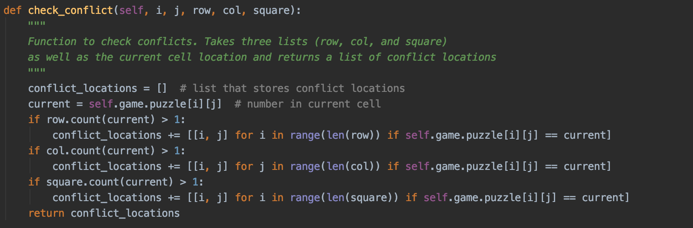

Mocking in Python Unit Testing
Recently, I wrote some unit tests for a Sudoku game project that I've been working on. However, due to the nature of the project, some functions would be difficult to test without making use of mocking. Python has a built-in unittest.mock library that includes helpful tools for implementing mock objects in Python.
What is mocking and why is it used?
In unit testing, mocking is replacing part of a program you are testing with a mock version. Mocking enables developers to write self-contained tests in cases where the actual implementation is reliant on complex underlying classes or requests to external services. For example, if a given function includes a request to gather information from a webpage, we probably wouldn't want our test of that function to actually gather the information. Instead, we could mock the request so that we are simply testing the function's handling of the information gathered.
Additionally, mock tests can save time if running the program's actual implementation is time consuming. For a more detailed explanation of how mocking is used in Python, see this blog post or the unittest.mock documentation.
How I've used mocking in my project
When I was working on a Sudoku program, I needed to write a unit test for a function that checks whether a number in a given cell conflicts with any other cells:

As you can see, this function depends on self.game.puzzle, the program's implementation of the Sudoku puzzle, which is constructed in a different class. Additionally, the program's implementation of the Sudoku puzzle in turn relies on other classes and functions. It would therefore be quite complicated to write a test that uses the program's implementation. Therefore, in order to reduce complexity, I created a mock version of the Sudoku puzzle to test the conflict-checking function.

In the mocked version, there is a class that mocks the Sudoku puzzle. In my test class, I then set the variable puzzle equal to an array of the desired test-case board values. I can then create an instance of the MockSudokuGame class, passing in puzzle, then setup the desired test case and run the test. If I didn't use mocking, I would have to make my test deal with many other classes, functions, and attributes, which is undesirable due to the complexity that it adds.
Most of the time, mocking isn't necessary when writing unit tests, but there are some instances, such as the above case, where it can come in handy. I'm glad that I took the time to learn the basics of mocking, and hopefully I'll be able to identify cases when it will be useful in the future.